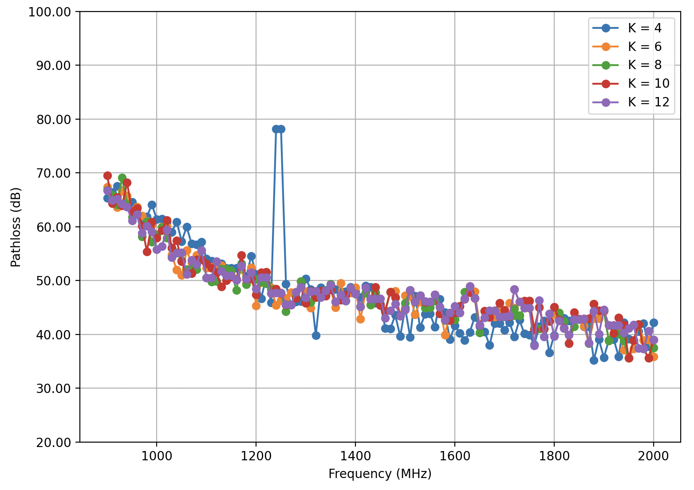

This paper presents an in-depth analysis of high-frequency uplink and downlink channel parameters, exploring their dynamics under varying K-factor conditions. The ratio of the power in the direct path to the power in the distributed paths, or K-factor, must be thoroughly understood in order to optimize performance in wireless communication systems. The study employs a comprehensive approach to investigate how different K-factor values influence key channel parameters in both uplink and downlink transmissions. Through systematic experimentation and analysis, the research sheds light on the variability of signal strength, delay spread, and other essential parameters across a spectrum of K-factor scenarios. The findings provide valuable insights into the nuanced interactions between K-factor and channel characteristics, offering a foundation for the development of adaptive communication systems that can dynamically adjust to diverse propagation environments. This research contributes to the refinement of high-frequency communication strategies, fostering advancements in the design and implementation of wireless networks for enhanced reliability and efficiency across a range of K-factor scenarios.
We have conducted extensive research and analysis in the field of high-frequency uplink and downlink channel parameters, ranging from 900 MHz to 4 GHz, in a laboratory environment. Our findings shed light on the variation of the estimated K-factor in different frequency bands and channel conditions, providing valuable insights for the evaluation of high-frequency networks.
After varying the parameters, we made graph-based analysis:
This study provides a thorough analysis of the intricate dynamics of high-frequency uplink and downlink performance under varying K-factor conditions. The K-factor, representing the relationship between direct and scattered power, plays a crucial role in wireless communication systems, necessitating a comprehensive understanding of performance optimization. Through rigorous simulations and analysis, this work has significantly contributed to signal propagation characteristics, encompassing aspects such as path loss, fading, and interference within the context of 5G networks. The study's conclusions not only illuminate the variability of signal strength and delay spread across a spectrum of K-factor scenarios but also deepen our understanding of the intricate connections between K-factor and channel parameters. The proposed network performs most efficiently while selecting the K-factor value 10. This newfound knowledge forms a cornerstone for the advancement of high-frequency communication strategies. By refining our understanding of these relationships, we contribute to the ongoing efforts in designing and implementing wireless networks that exhibit enhanced reliability and efficiency across a diverse range of K-factor scenarios.